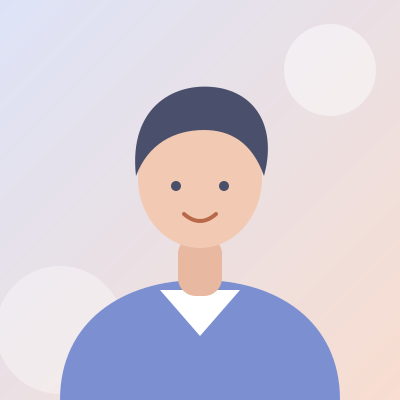
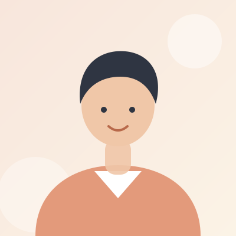
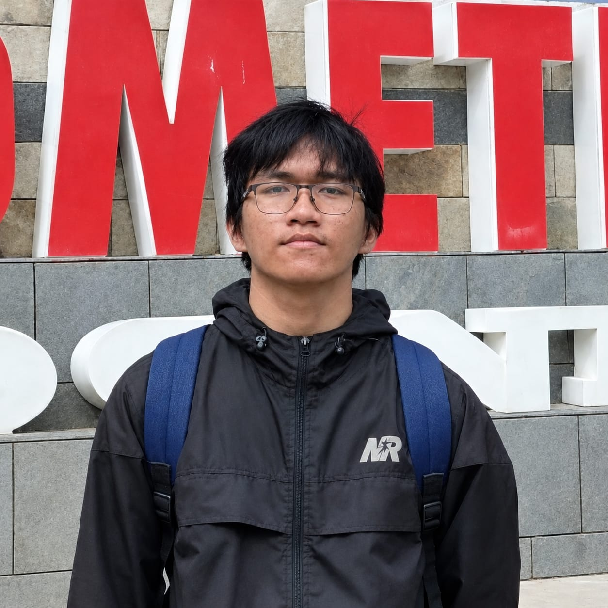

Sesuaikan
Mahasiswa Teknik Informatika
Profil, keahlian, dan proyek yang dikerjakan Sesuaikan.
Lihat ProfilKenali kampus dan jurusan kami, lalu lihat profil serta karya dari empat anggota kelompok.
Perguruan tinggi swasta di Medan yang berfokus pada bidang informatika.
Universitas Mikroskil berada di Medan, Sumatera Utara, dan dikelola oleh Yayasan Bina Pertiwi. Perjalanannya dimulai dari lembaga kursus komputer, berkembang menjadi sekolah tinggi, lalu resmi menjadi universitas pada 2021 setelah STMIK Mikroskil dan STIE Mikroskil bergabung.
Kampusnya berlokasi di Jalan Thamrin dan terdiri dari Kampus A, B, dan C. Slogan yang dipakai adalah Leading in Informatics.
Yayasan Bina Pertiwi Medan mendirikan lembaga kursus komputer IMC.
IMC ditingkatkan menjadi program Diploma 1 bernama Microskills.
Resmi menjadi sekolah tinggi dengan nama STMIK Mikroskil.
Yayasan mendirikan STIE Mikroskil di bidang ekonomi.
STMIK dan STIE Mikroskil bergabung menjadi Universitas Mikroskil.
Program studi S1 di Fakultas Informatika dengan gelar S.Kom.
Menjadi program studi unggul yang menghasilkan lulusan berdaya saing global di bidang informatika, dengan fokus pada aplikasi berskala besar dan kecerdasan buatan.
Menyelenggarakan pendidikan berbasis teknologi terkini untuk menghasilkan lulusan unggul, khususnya di pengembangan aplikasi berskala besar dan aplikasi berbasis AI.
Machine Learning, Natural Language Processing, Computer Vision, dan Big Data.
Sistem Terdistribusi, DevOps, Komputasi Awan, dan Pengembangan Aplikasi Mobile.
Sumber: situs resmi Universitas Mikroskil (mikroskil.ac.id). Angka dan akreditasi dapat berubah, cek kembali di situs resmi sebelum dikumpulkan.
Klik kartu untuk membuka halaman profil masing-masing.

Mahasiswa Teknik Informatika
Profil, keahlian, dan proyek yang dikerjakan Sesuaikan.
Lihat ProfilMahasiswa Teknik Informatika
Profil, keahlian, dan proyek yang dikerjakan Zega.
Lihat Profil
Mahasiswa Teknik Informatika
Profil, keahlian, dan proyek yang dikerjakan Rendy.
Lihat Profil
Mahasiswa Teknik Informatika
Profil, keahlian, dan proyek yang dikerjakan Jeri.
Lihat Profil